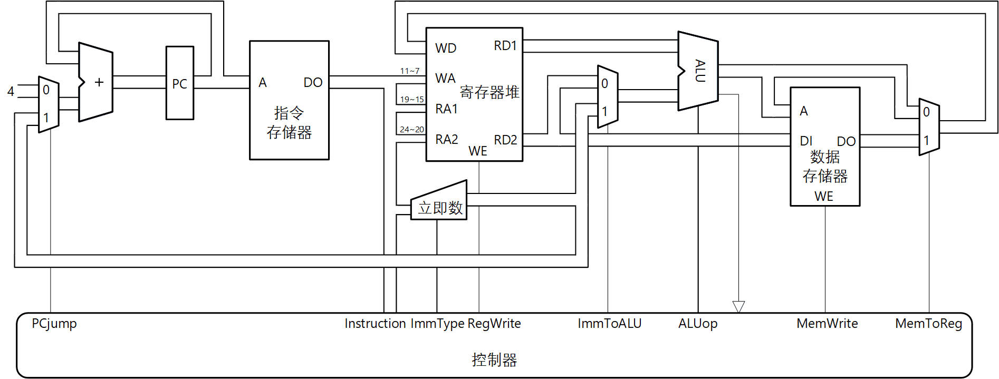

实现分支指令
实验原理
分支指令包括beq、bne、blt、bge以及bltu、bgeu指令。数据通路如图 1。

图 1. 支持分支指令的数据通路
实验步骤
1. 修改控制器模块
（1）增加分支指令译码。
（2）产生PCjump控制信号。
根据对rs1和rs2两个寄存器值的比较结果以及funct3编码，产生PCjump控制信号。
（3）“不关心”的控制信号。
虽然分支指令不写寄存器，理论上MemToReg信号的值不会影响指令执行结果。由于实验平台根据控制信号绘制动态信息流显示，为避免显示错误的信息流，建议“不关心”的控制信号输出为0。
2. 实现数据通路
（1）修改ImmGen模块
增加B型立即数的生成。注意B型立即数实际是13位立即数，最低位需要补0。
（2）修改CPU模块
添加多路器，根据图 1连接数据通路各个部件；连接增加的控制信号。
3. 增加调试观察信号
根据虚拟面板添加观察信号和观察数据。与虚拟面板对应的WS和WD示例如下。
//送给调试器的观察信号，需要与虚拟面板的信号框相对应
struct packed{
logic [3:0] WS6; //ALUop
logic [4:0] WS5; //ImmType
logic WS4; //ImmToALU
logic WS3; //MemToReg
//以下观察信号用于电路测试，请勿修改！
logic WS2; //PCjump
logic WS1; //MemWrite
logic WS0; //RegWrite
}ws;
//送给调试器的观察数据，需要与虚拟面板的数据框相对应
struct packed{
logic [31:0] WD11; //memReadData
logic [31:0] WD10; //aluOut
logic [31:0] WD9; //nextPC
logic [31:0] WD8; //regReadData2
logic [4:0] WD7; //ra2
logic [31:0] WD6; //immData
logic [31:0] WD5; //regWriteData
logic [4:0] WD4; //wa
//以下观察数据用于电路测试，请勿修改！
logic [31:0] WD3; //regReadData1
logic [4:0] WD2; //ra1
logic [31:0] WD1; //instruction
logic [31:0] WD0; //pc
}wd;